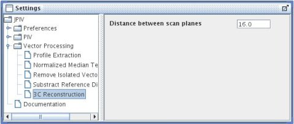

home
download
introduction
quick start
how to
reference
scripting
javadoc
repository
troubleshooting

settings-panel: Vector Processing - 3C Reconstruction.
Distance between scan planes
Under some circumstances, JPIV can calculate the out-of-plane velocity component from a set of parallel plane measurements. Assuming mass continuity, calculating the divergence within a velocity plane, gives the velocity gradient perpendicular to that plane. See the documentation of the menu item Vector - reconstruct third velocity component for a detailed explanation. Specify the distance between the measurement planes here. See the javadocs for more options.